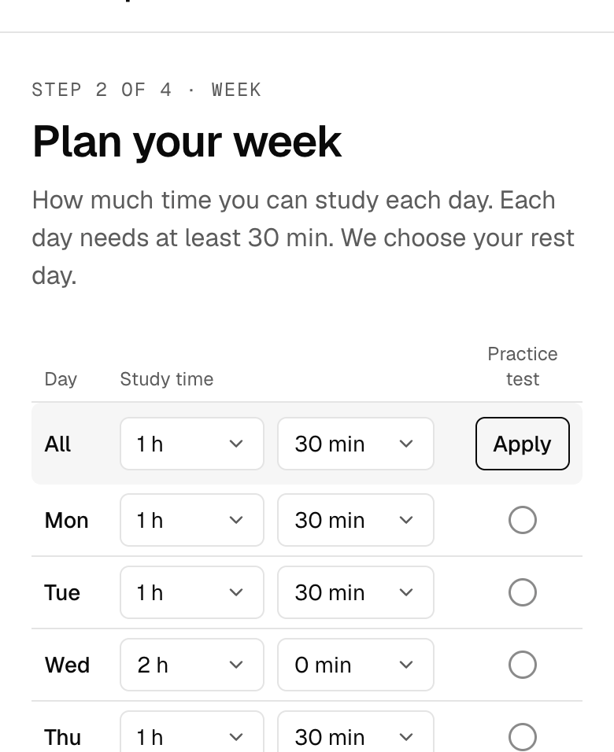
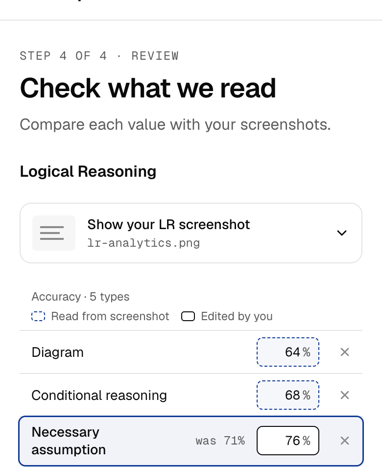
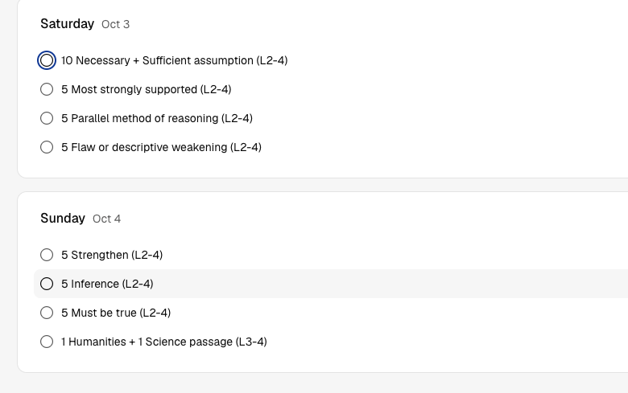
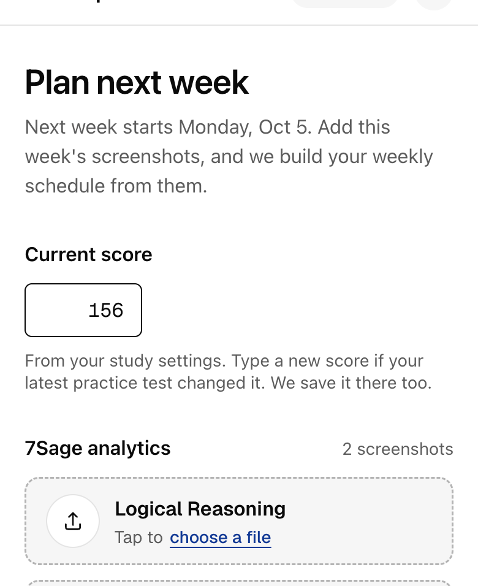

Weekly
$7.99a week
Pay week by week. Good for a short final push.
Your first full week free. No card needed.
Start free weekUpload your analytics every weekend. DrillMap builds Monday to Sunday around the question types you miss most.


Four steps. The last one repeats every weekend.
Your scores, your study hours, and your goal test date.
Two screenshots. You check every number we read before we save it. You can also type them by hand.
A Monday–Sunday plan aimed at your weakest question types. Check off each drill as you go.
Upload new analytics. Next week's plan adjusts to what changed.
Four steps. The last one repeats every weekend.
Your scores, your study hours, and your goal test date.

Two screenshots. You check every number we read before we save it. You can also type them by hand.

A Monday–Sunday plan aimed at your weakest question types. Check off each drill as you go.

Upload new analytics. Next week's plan adjusts to what changed.

Pick a plan when your free week ends. Both plans get the same weekly schedule.
$7.99a week
Pay week by week. Good for a short final push.
Your first full week free. No card needed.
Start free week$25a month
About $34.60 a month on Weekly. Good for a full prep cycle.
Your first full week free. No card needed.
Start free weekCancel anytime. You keep access until your paid week or month ends. No refunds for unused time.
No. Your first full week is free. You pick Weekly ($7.99) or Monthly ($25) only when it ends.
Pick Weekly ($7.99) or Monthly ($25) to keep getting weekly schedules.
Any time. You keep access until your paid week or month ends. No refunds for unused time.
Yes for screenshots. You can also type your numbers by hand.
No. Fixed rules built from the tutor's coaching method make the plan. AI only reads your screenshots, and you check what it read.
Your first full week free. No card needed.
The real app opens here.